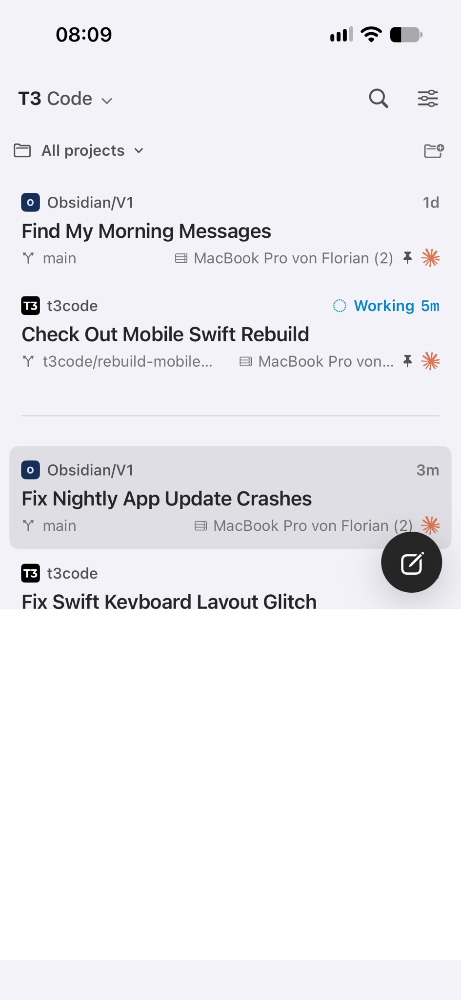
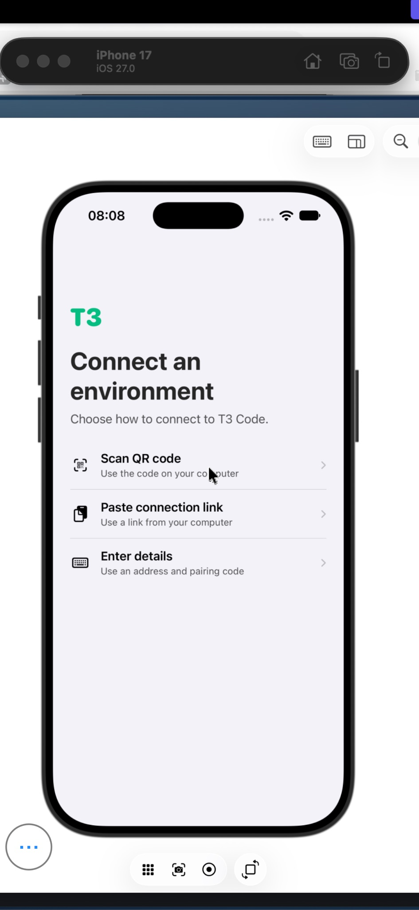
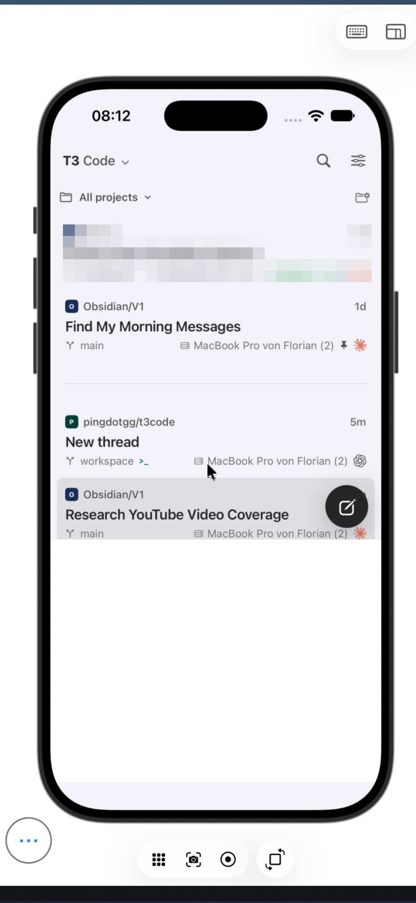
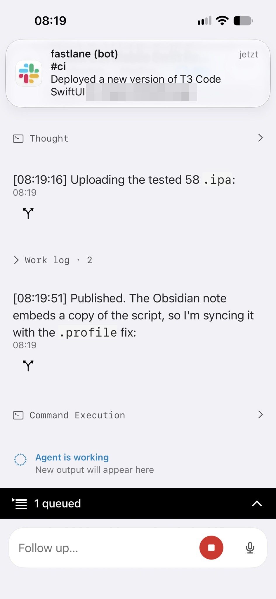

Fixing a Phone App on the Phone From the Same App
I was in bed, on my phone, watching my AI drive a fake phone, to fix the app I was talking to it through.
Build a version, then tell the others
T3 Code is the app I use to run AI coding agents on my Mac, with a phone app to steer them. Its newest Mac version had just locked out the phone app from the App Store.
The plan fit in one sentence: build the newer phone app, put it on our internal install page, and warn my colleagues.
I dictate everything, so my messages come out the way I talk. From my phone: "Build a version and upload it to the iOS release project."
The agent asked where the recipe was. "It's documented in tilde / obsidian/V1/ ... T3code". It found it and started building.
"Wait a second"
Then I noticed it. I had opened a conversation, tapped into the text field, gone back to the list, and the bottom third of the screen was white. Just white. No list, no buttons.

"Wait a second." The agent stopped the build. I sent it the screenshot: "Can we figure out where this white area comes from".
It measured. The list had lost a strip at the bottom almost exactly as tall as the phone's keyboard. Its theory: the app still thought the keyboard was open, and kept room for it. Then it asked what I had done right before.
"I don't know I just had it. That's why I stopped you and asked why it could happen so if you're not immediately know what it is then we should continue building."
So it continued. A few minutes later I had the trigger and told it to stop again. In a second conversation, I had another agent file it as a bug report for the project.
A theoretical fix
The first agent wrote a fix for its theory: close the keyboard before going back. It built the new version, uploaded it, and the build went out to our team channel on its own.
"Install it on my phone and then I can test if it works now."
It did.
"it didn't the screen stays white"
The agent wrote back that its theory was wrong. A minute later, it took that back too. The theory was back on, with a different fix. This one went onto my phone as a test build, the kind developers use to see more of what's going on inside.
I opened a conversation, and the app crashed.
Calling home on a broken line
The app that crashed was the app I was using to talk to the agent. The fix was on my phone, and so was the crash, and my only line to the agent was the thing that was broken.
My first lifeline would have been the App Store app. But that was the app the new Mac version had locked out, the whole reason for the morning. The third would have been my iPad, but that would have been less cool.
So I used the second: the version from that morning. I installed it over the crashing one. The one I had stopped, with the first fix that didn't fix anything. It still had the white area, but it opened conversations. That was enough to type: "Now it crashed when i open a thread"
The agent pulled the crash report straight off my phone. The crash wasn't its fix. It was the test build itself: in that mode, the conversation screen crashes on opening, with or without any change of ours. It put a normal build of the same fix on my phone.
"it no longer crashes, but the white area is also not gone"
"I'm not going to guess a third time"
"Two fixes haven't worked, and I'm not going to guess a third time without seeing the view hierarchy."
The view hierarchy is the app's floor plan: which box sits inside which, how big each one is, what color shows through. You can only read it from a running app. So the agent asked to start its own copy of my setup on the Mac, with a copy of my data, and run the app in the simulator, a fake iPhone that lives in a window on the Mac. My real setup wouldn't be touched.
"Yes, do so."
Phoneception
The fake phone fought back first. The tool the agent uses to tap the screen didn't work with the newest Xcode, Apple's developer app, so it switched to a different tapping tool. Connecting the fake phone to the copy of my setup failed twice: an app without the developer's signature isn't allowed to save its login. It signed the app and tried again.
I watched all of it from my phone. A remote-screen app on my phone showed my Mac's screen, and my Mac showed a fake iPhone, and the fake iPhone was running the app I was using to steer the agent.

The agent opened a conversation, tapped the text field, waited for the keyboard, and went back.
White.

Now the agent could look inside, and it took about a minute. The app's outermost box has a white background. Inside it sat a second box, added recently so the app understands keyboard shortcuts. Both boxes made room for the keyboard, and after going back, the inner one stayed shrunk. The white was the outer box showing through underneath.
One of its test runs went out without its change applied, by accident. The white area showed up there too, which settled it: the bug was in the project's own code, not in anything I had added.
The fix was one line. Only the inner box makes room for the keyboard now.
Reporting live
"It reproduced it," I had told another AI the moment the white showed up on the fake phone.
That was a third conversation in this story. While the agent worked, I had kicked off a blog session from my iPad, so another AI would record everything as it happened: "you are currently the blog post being written on the iPad while this is all happening on my iPhone". Then I looked at all the screenshots on my phone and didn't want to wait for them to sync. So I moved the story to the phone too, into the same app, one conversation over from the bug. I was already sure: "this is going to be a story for the ages".
Interrupted by the ending
I was still dictating the story when the new version installed itself on my phone. "I just got interrupted by a new installation of the new app on the phone while I was writing the blog post with the bug fix and it works"
The agent's report had one more fact in it. The bug came in with the same update I had set out to ship that morning. The white area I stopped the release for had arrived with the release.
The story had to wait: the other agents needed their next steps. So I switched conversations and queued them: upload the tested build, so the bot in our team channel posts the link. Hand everything we had learned to the agent that had filed the bug report. Write the warning to my colleagues.

The warning went out: update the Mac app, and install this phone app. Forty-five minutes after "Build a version and upload it", the morning's one-sentence plan was done.
"I never intended to have a story like that in the morning."
I also never got out of bed.